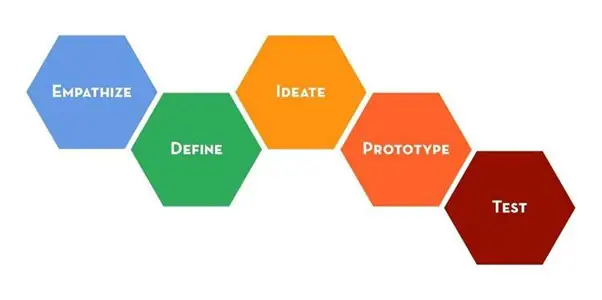
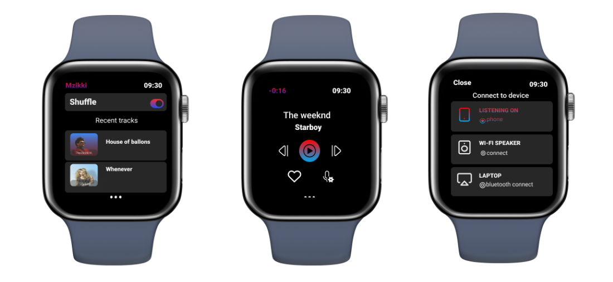

Music App design
Project information
- Category: App design
- Client: Personal
- Project date:February, 2022
Mzikki application design is the result of an end-to-end user experience project I undertook as a challenge.
This study follows my journey from identifying a problem space, learning about the problem, and creating a solution.
The problem: Create a music app design that would be intergrated into a smart watch.
Solution: Mzikki app and smart watch OS simple and minimalistic design .
My Role: As a UI/UX team of one I was responsible for the :
⁕Research
⁕Ideation
⁕Information Architechture
⁕User Interface and visual design
Through out the project, I incoporated invaluable feedback from my client.
My tools:
✔Sticky notes ✔Empathy map template
✔moqup template ✔Pens
✔Adobe XD
✔illustrator
✔User story template
Process
My process employed a design thinking mindset, in which I focused first on learning about the problem space, through the discovery stages of understanding and empathy, then synthesizing what I had learned to define and frame the problem and finally creating the solution.

PHASE 1: LEARNING ABOUT THE PROBLEM
Understand
◆Secondary research
Looking into existing existing music apps on both phones and smart watches to identify recent trends and patterns
◆Comparative analysis
I followed up with a comparative analysis with Spotify and Mdundo.Empathize
◆Primary research
I moved to primary research after a good understanding of the dating trends where I could learn directly from people through interviews and one on one talks.Prior to setting this up ,I developed some goals:▹Transition from phone application to smart watch application
Define
◆ Affinity map
I set to work creating an affinity map after synthesizing my research notesTwo themes emerged:
*Focus on artists
*Focus on music on play layout and seamless transition from IOS to smart watch OS
◆ Empathy maps
I created empathy maps to organize information into what people feel.◆ Persona
Personas were created from the empathy map which included individual goals,motivations,needs ,motivations,frustrations and environment◆ Problem statement
Finally the synthesis of the information also gave me the opportunity to redefine the problem into a more adressable problem :PHASE 2: CREATING A SOLUTION
Ideate
◆ How might we...?
I formulated how might we questions to address the core element.How might we create a simple music application that will have seamless transition into the watch OS
◆ The idea
Mzikki application and smart watch OS simple and minimalistic designPrototype
◆ User Stories
The first step is building a minimum viable product using User Stories,actions and epics.◆ Information architecture
I created a general structure using a user flow diagram. The improvised revisions would be later added to high fidelity prototype◆ Sketching
I sketched out the onboarding and screens needed for the app and turned it into low fidelity prototypes◆ Wireframes
I developed some low fidelity wireframes for more editing and feedback from my teammate. Any changes would be noted down and changed to better revisions and wireflows◆ Style Guide
I created a style guide to illustrate the typefaces,colors and various UI elements that were applied in the design system. I wanted to achieve a fun and interactive look to stay relevant.◆ Mockup
We developed a high fidelity mockup that would be the base of the prototype
